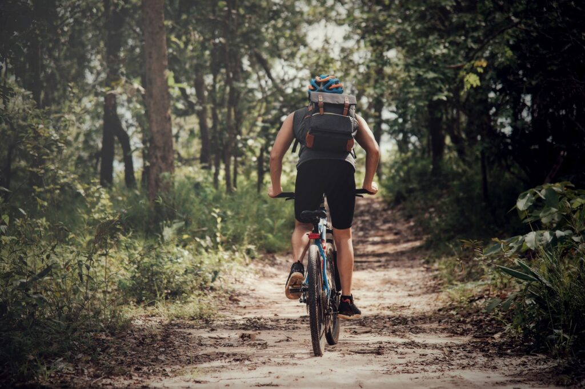
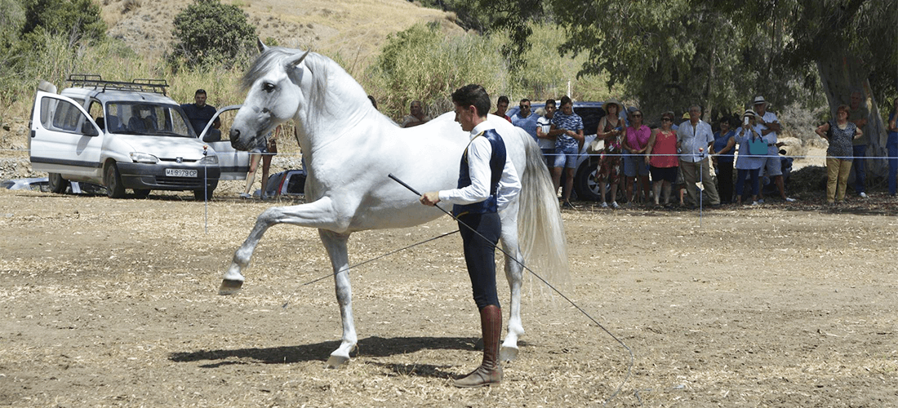

ACTIVIDADES PRINCIPALES
La disparidad del relieve desempeña un papel protagonista en la construcción de la amplia oferta de actividades deeste espacio natural: montañismo -Picacho y el Aljibe-, descenso de barrancos -cañones de la Garganta-,
espeleologia -Ramblazo-Motilla- o recorrer sus senderos, tanto a pie como en bicicleta o a caballo (rutas de La
Almoraima), muchos de ellos sobre viejas veredas y caminos empedrados, son solo una muestra. Las aguas del
embalse de Barbate permiten navegar y, por otra parte, la observación de las aves en invernada o durante las
migraciones. El mismo carácter estacional tiene la recogida de setas, práctica que se desarrolla en otoño
y que tiene en Jimena de la Frontera su carta de presentación.
Deportes:
Vuelo libre, Bicicleta de Montaña, Actividades ecuestres 